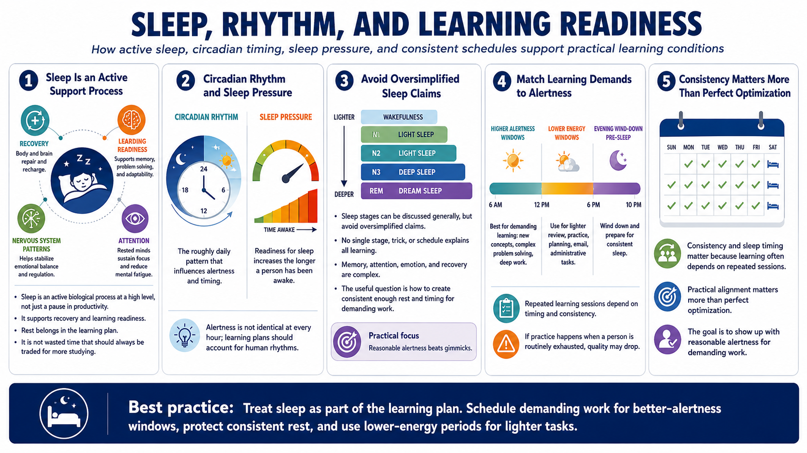

Sleep Basics for Learners
Connecting to LMS... Progress: in progress

Narration
Sleep is an active biological process at a high level, not simply a pause in productivity. During sleep, the body and nervous system move through patterns that support recovery and learning readiness. For learners, the practical message is that rest belongs in the learning plan. It is not wasted time that should always be traded for one more hour of study.
Two useful concepts are circadian rhythm and sleep pressure. Circadian rhythm refers to the roughly daily pattern that influences alertness and timing. Sleep pressure refers to the tendency to become more ready for sleep the longer a person has been awake. These ideas help explain why attention is not identical at every hour and why learning plans should account for human rhythms.
Sleep stages can be discussed generally, but the lesson should avoid oversimplified claims. No single stage, trick, or schedule explains all learning. Memory, attention, emotion, and recovery are complex. The useful design question is not how to exploit one sleep stage. It is how to create consistent enough rest and timing that learners can show up with reasonable alertness for demanding work.
Consistency and sleep timing matter because learning often depends on repeated sessions. If a person practices at a time when they are routinely exhausted, the practice may be lower quality. When possible, schedule demanding learning when alertness is likely to be better, and reserve lighter review or administrative tasks for lower-energy windows. The point is practical alignment, not perfect optimization.